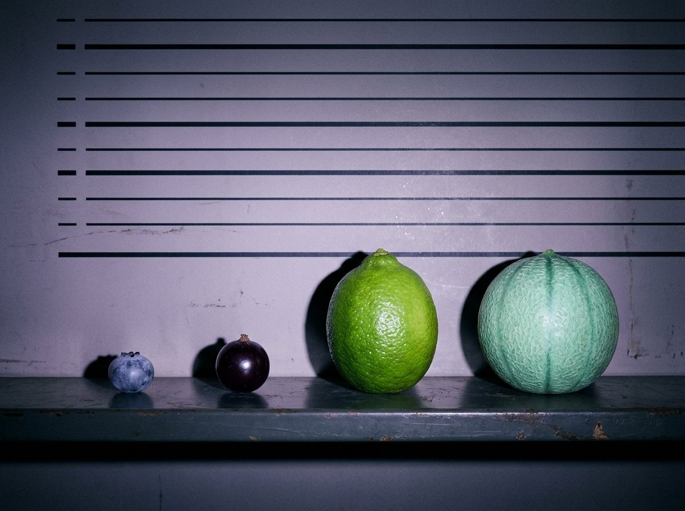
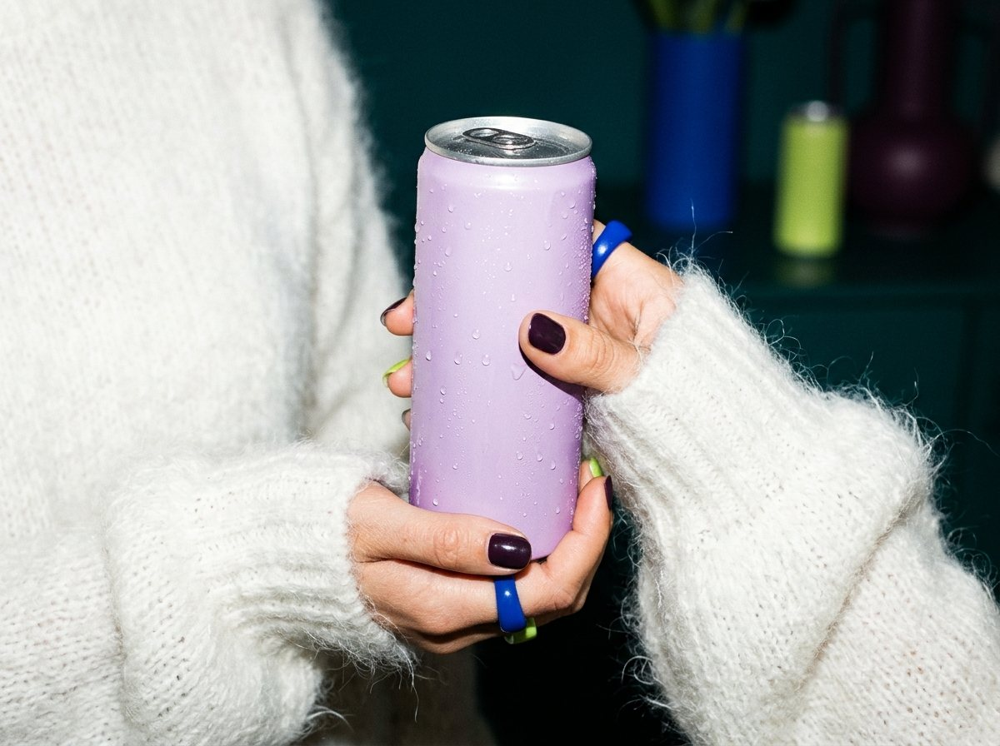
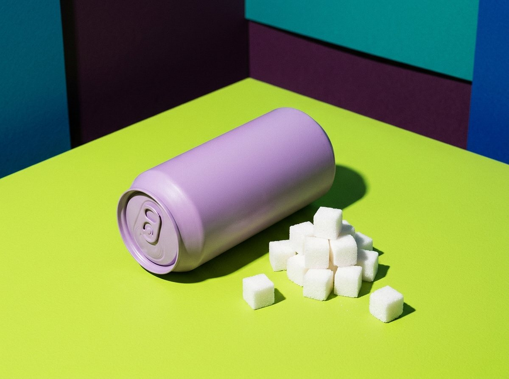
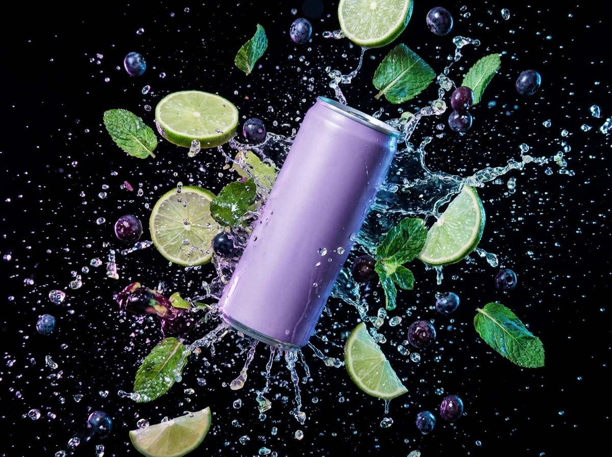

Featured evidence
Delicious? Definitely. Suspicious? That’s for us to know and you to find out. It’s not a confession if it’s true.

Have sodas lost the plot?
Unboxed: a cozy kind of trouble

Eleven low-sugar sips,

ranked by a tired dietitian
